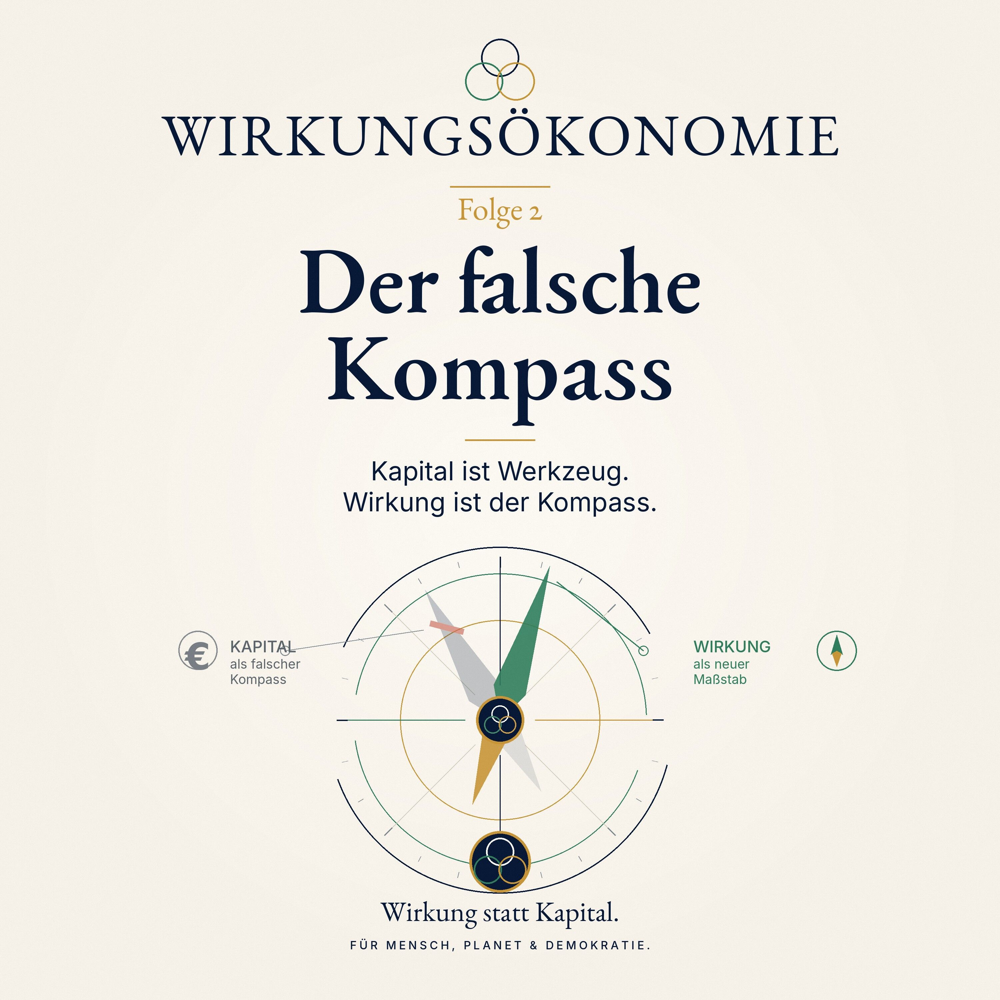

Podcast · Folge 2 · 18. Juni 2026 · ca. 28 Min.
Der falsche Kompass
Kapital ist Werkzeug. Wirkung ist der Kompass.

 Wirkungsökonomie
Wirkungsökonomie
Podcast · Folge 2 · 18. Juni 2026 · ca. 28 Min.
Kapital ist Werkzeug. Wirkung ist der Kompass.

Anhören
Warum steuern wir Wirtschaft, Politik und Gesellschaft eigentlich nach Geld - obwohl Geld allein nicht zeigt, ob etwas gut oder schlecht wirkt?
In Folge 2 der Podcast-Reihe zur Wirkungsökonomie geht es um den Moment, in dem aus einer einfachen Beobachtung eine große Frage wurde: Warum messen wir so viel - Emissionen, Wasserverbrauch, Lieferketten, Arbeitsbedingungen, Nachhaltigkeitsdaten - und trotzdem verändert sich am eigentlichen System so wenig?
Der Ausgangspunkt ist eine persönliche Reise: von der Physik über das Nachhaltigkeitsmanagement im Konzern bis zur Erkenntnis, dass Berichte allein noch keine Wirkung erzeugen. Denn ein Nachhaltigkeitsbericht kann sehr genau beschreiben, was passiert. Aber solange diese Informationen nicht in Preise, Steuern, Kapitalflüsse und politische Entscheidungen zurückwirken, bleibt das System auf dem alten Kurs.
Das Bild dieser Folge ist der Kompass. Kapital ist wie ein Kompass, der lange nützlich war: Er zeigt, wo Geld fließt, wo Gewinn entsteht, wo Märkte wachsen. Aber er zeigt nicht, ob dieser Kurs Mensch, Planet und Demokratie stärkt - oder schwächt.
Die Wirkungsökonomie sagt deshalb nicht: Kapital muss weg. Im Gegenteil. Kapital bleibt wichtig. Aber Kapital darf nicht länger der Kompass sein. Es muss wieder Werkzeug werden. Der neue Kompass heißt Wirkung.
Diese Folge erklärt, warum der alte Maßstab zu falschen Entscheidungen führt, warum Nachhaltigkeit als Zusatz nicht reicht und warum Wirkung zur zentralen Steuerungsgröße einer zukunftsfähigen Wirtschaft werden muss.
Es geht nicht um Ideologie. Es geht um Orientierung.
Merksatz der Folge: Kapital ist ein Werkzeug. Wirkung ist der Kompass.
Verknüpfungen
Transkript
Das Transkript macht die Folge auch als Text zugänglich und verknüpft zentrale Begriffe mit dem Glossar.
Stell dir vor, du bist auf einem Schiff.
Es ist früh am Morgen. Über dem Wasser liegt Nebel. Man sieht nicht weit. Die Maschine läuft. Die Mannschaft ist wach. Alle tun etwas. Im Maschinenraum wird nachjustiert. Auf der Brücke werden Karten ausgebreitet. Jemand ruft: Wir müssen schneller werden.
Also wird schneller gefahren.
Die Maschine arbeitet mehr. Der Treibstoffverbrauch steigt. Die Anzeigen leuchten. Die Menschen an Bord geben sich Mühe. Niemand ist faul. Niemand sagt: Mir ist egal, wo wir ankommen.
Und trotzdem gibt es ein Problem.
Der Kompass zeigt nicht richtig.
Nicht sehr falsch. Nur ein bisschen. Ein paar Grad vielleicht. So wenig, dass man es am Anfang kaum merkt. Aber je länger das Schiff fährt, desto größer wird der Abstand zum eigentlichen Ziel.
Nach einer Stunde ist man ein Stück daneben. Nach einem Tag deutlich. Nach einer Woche landet man vielleicht an einer völlig anderen Küste.
Und jetzt kommt der wichtige Punkt: In so einer Lage hilft es nicht, einfach noch mehr Gas zu geben.
Mehr Geschwindigkeit macht das Problem nicht kleiner. Sie macht es größer. Man kommt dann nur schneller am falschen Ort an.
Diese Folge erzählt von genau so einem Kompass. Nicht auf einem Schiff. Sondern in unserer Wirtschaft. In unserer Politik. In unserem Denken über Wohlstand.
Der Kompass, den wir viel zu lange benutzt haben, heißt Kapital. Gewinn. Wachstum. Umsatz. BIP. Reichweite. Marktwert.
Das sind alles nicht unwichtige Dinge. Aber sie beantworten eine andere Frage als die, die wir eigentlich stellen müssten.
Sie sagen uns: Wie viel bewegt sich?
Aber sie sagen uns nicht: In welche Richtung bewegt es sich?
Und genau aus dieser Frage ist für mich die Wirkungsökonomie entstanden.
Hallo und herzlich willkommen zu Folge 2 von "Der neue Kompass - Wirkungsökonomie einfach erklärt".
Mein Name ist Natalie Weber, und heute geht es um die Frage, wie ich überhaupt auf diese Idee gekommen bin: Wirkung statt Kapital. Für Mensch, Planet und Demokratie.
In der ersten Folge haben wir mit zwei Äpfeln begonnen. Zwei Äpfel im Supermarkt. Vielleicht sehen sie ähnlich aus. Vielleicht kosten sie an der Kasse fast gleich viel. Aber sie können sehr unterschiedliche Geschichten mitbringen: Wasser, Boden, Transport, Arbeit, Pestizide, Kühlung, Klima, Region, Zukunft.
Der Satz, der aus dieser Folge hängen bleiben sollte, war:
Das Preisschild sagt uns, was wir bezahlen. Aber nicht, wer sonst noch bezahlt.
Heute gehen wir einen Schritt zurück.
Nicht zurück im Sinne von: Wir entfernen uns vom Thema. Sondern zurück zur Wurzel. Denn der Apfel ist ein gutes Bild. Aber hinter diesem Apfel steht eine größere Frage:
Warum steuern wir eine ganze Gesellschaft mit Messgrößen, die zwar Geldbewegungen zeigen, aber die tatsächlichen Folgen unseres Handelns nur unvollständig erfassen?
Warum gilt ein Unternehmen als erfolgreich, wenn der Gewinn steigt - auch dann, wenn dabei Böden ausgelaugt, Menschen erschöpft oder Vertrauen zerstört wird?
Warum gilt eine Volkswirtschaft als erfolgreich, wenn viel Geld bewegt wird - selbst dann, wenn ein Teil dieses Geldes nur dafür ausgegeben wird, Schäden zu reparieren, die vorher entstanden sind?
Und warum haben wir uns so sehr daran gewöhnt, dass das normal ist?
Die einfachste Frage dieser Folge lautet:
Woran merken wir eigentlich, ob etwas gut läuft?
Das klingt fast kindlich. Aber manchmal sind kindliche Fragen die gefährlichsten Fragen für alte Systeme.
Wenn ein Kind fragt: Warum ist der Himmel blau?, dann kann man nicht mit "Das war schon immer so" antworten. Man muss erklären.
Und wenn ein Kind fragen würde: Warum ist ein Land reicher, wenn nach einer Flut viele Häuser wieder aufgebaut werden müssen?, dann merkt man: Da stimmt etwas nicht in unserer Zählweise.
Denn in der klassischen Wirtschaftsrechnung kann Wiederaufbau als wirtschaftliche Aktivität erscheinen. Bauunternehmen arbeiten, Material wird verkauft, Geld wird ausgegeben. Das sieht nach Bewegung aus.
Aber die zerstörten Häuser, die verlorenen Erinnerungen, die Angst, die nassen Keller, die Versicherungsprobleme, die kaputte Infrastruktur - all das ist kein Wohlstand.
Das ist Reparatur.
Es ist wichtig zu reparieren. Aber Reparatur ist nicht dasselbe wie Fortschritt.
Das ist ein Kernproblem unserer alten Messlogik: Sie zählt sehr gut, dass etwas passiert. Aber sie unterscheidet viel zu schlecht, ob dieses Etwas die Welt stabiler oder instabiler macht.
Sie misst Bewegung. Nicht Richtung.
Sie misst Aufwand. Nicht Wirkung.
Sie misst Kapital. Nicht Zustand.
Meine persönliche Reise zur Wirkungsökonomie beginnt nicht mit Steuerrecht. Nicht mit Parteiprogrammen. Nicht mit Nachhaltigkeitsberichten.
Sie beginnt mit Physik.
Physik war für mich immer mehr als Formeln. Natürlich gibt es Formeln. Viele Formeln. Manchmal sehr schöne, manchmal sehr hartnäckige. Aber dahinter steckt eine Art, die Welt anzuschauen.
Die Physik fragt nicht zuerst: Was behauptet jemand?
Sie fragt: Was verändert sich?
Wenn eine Kugel auf einem Tisch liegt und ich sie anstoße, dann bewegt sie sich. Wenn sie eine zweite Kugel trifft, bewegt sich auch die. Wenn ich einen Stein in einen Teich werfe, entstehen Wellen. Wenn ich einen Schalter drücke, fließt Strom. Wenn ich etwas erhitze, verändert sich der Zustand.
Das ist ganz einfach. Und zugleich sehr tief.
In der Physik verschwindet nichts einfach, nur weil man es nicht mehr sieht.
Energie geht nicht verloren. Sie verändert ihre Form. Bewegung kann zu Wärme werden. Elektrische Energie kann Licht erzeugen. Reibung kann Energie in Wärme verwandeln. Eine Handlung hat Folgen. Und diese Folgen haben wieder Folgen.
Das hat mein Denken geprägt.
Wenn in einem System etwas passiert, dann bleibt das System nicht einfach dasselbe. Es verändert sich. Vielleicht sofort. Vielleicht später. Vielleicht sichtbar. Vielleicht versteckt. Aber es verändert sich.
Und irgendwann stellte ich mir die Frage:
Wenn das in der Natur so selbstverständlich ist - warum tut die Wirtschaft oft so, als könnten Folgen verschwinden?
Warum behandeln wir CO2, zerstörte Böden, erschöpfte Menschen, ausgelagerte Risiken oder demokratischen Vertrauensverlust so, als wären sie nur Randnotizen?
Für die Physik ist klar: Nichts verschwindet. Es wirkt nur woanders weiter.
Für die Ökonomie war es lange bequem zu sagen: Das sind externe Kosten.
Extern klingt harmlos. Als läge es außerhalb der Welt.
Aber natürlich liegt es nicht außerhalb der Welt. Es liegt nur außerhalb der Rechnung.
An dieser Stelle ist eine begriffliche Klarheit wichtig.
Wirkung bedeutet in der Wirkungsökonomie nicht automatisch: etwas Gutes.
Wirkung heißt erst einmal nur: Es verändert sich ein Zustand.
Wenn ich einen Stein ins Wasser werfe, entstehen Wellen. Das ist Wirkung. Ob diese Wirkung gut oder schlecht ist, hängt vom Zusammenhang ab.
Wenn das Wasser ein ruhiger Teich ist, ist es vielleicht nur ein schönes Bild. Wenn daneben ein Vogelnest im Schilf liegt und die Welle es gefährdet, ist es etwas anderes. Wenn der Stein eine Rettungsleine beschwert, damit sie jemandem zugeworfen werden kann, wieder etwas anderes.
Wirkung ist also nicht Moralgefühl. Wirkung ist Zustandsveränderung.
Bewertet wird sie erst durch einen Referenzrahmen.
In der Wirkungsökonomie lautet dieser Rahmen: Mensch, Planet und Demokratie. Also: Verbessert eine Handlung Lebensqualität, Gesundheit, Teilhabe, faire Arbeit? Schützt sie Klima, Wasser, Böden, Artenvielfalt, Ressourcen? Stärkt sie Vertrauen, Rechtsstaat, Medienqualität, Diskursfähigkeit und demokratische Stabilität?
Oder schwächt sie das alles?
Das klingt groß. Aber es ist im Kern eine sehr praktische Frage:
Was verändert es eigentlich?
Diese Frage begleitet ab jetzt jede Folge.
Nach der Physik kam für mich die Praxis. Nachhaltigkeitsmanagement in einem Industriekonzern.
Und da sah ich etwas, das mich lange beschäftigt hat.
Es fehlte nicht an Daten.
Es gab Daten über Energie. Über Wasser. Über Emissionen. Über Arbeitssicherheit. Über Lieferketten. Über Recycling. Über Risiken. Über Standards. Über Ziele. Über Maßnahmen. Über Fortschritte. Über Abweichungen.
Diese Daten wurden gesammelt. Geprüft. Verdichtet. In Tabellen gebracht. In Präsentationen. In Berichte. In Systeme. In Audits. In Ratings.
Und vieles davon war sinnvoll. Ich möchte das gar nicht kleinreden. Ohne Daten kann man nichts verstehen. Ohne Messung bleibt vieles Nebel.
Aber irgendwann merkte ich:
Wir messen sehr viel. Aber das System steuert trotzdem weiter nach etwas anderem.
Am Ende zählt im Einkauf oft der Preis. In der Bilanz der Gewinn. Am Kapitalmarkt die Rendite. In der Politik das Wachstum. Im Management die Kennzahl, die im Bonus steht.
Die Nachhaltigkeitsdaten waren da. Aber sie waren oft nicht der Kompass.
Sie waren eher wie ein Wetterbericht, den alle lesen - und dann fahren sie trotzdem ohne Regenschirm los.
Oder noch einfacher:
Ein Thermometer macht noch keine Heizung.
Das Thermometer zeigt dir, dass es kalt ist. Aber wenn es nicht mit der Heizung verbunden ist, bleibt der Raum kalt.
Genauso ist es mit Nachhaltigkeitsberichten. Sie können zeigen, dass etwas problematisch ist. Aber solange diese Information nicht in Preise, Steuern, Kapitalzugang, Beschaffung, Produktentwicklung oder politische Entscheidungen zurückwirkt, bleibt sie Beschreibung.
Beschreibung ist wichtig. Aber Beschreibung verändert noch keine Richtung.
Das war einer meiner entscheidenden Punkte.
Wir leben in einer Zeit, in der sehr viele Organisationen berichten. Unternehmen berichten. Staaten berichten. Kommunen berichten. Es gibt Standards, Fragebögen, Prüfungen, Zielsysteme, Kennzahlen.
Aber ein Bericht ist zunächst einmal wie ein Foto.
Ein Foto kann sehr genau sein. Es kann scharf sein. Es kann zeigen, wo ein Riss in der Wand ist.
Aber das Foto repariert die Wand nicht.
Und wenn niemand aufgrund dieses Fotos handelt, dann bleibt der Riss.
Darum reicht Nachhaltigkeit als Zusatz nicht.
Wenn Nachhaltigkeit neben dem eigentlichen Steuerungssystem steht, wird sie leicht zur Beilage. Wie Petersilie auf dem Teller. Sie sieht gut aus. Sie signalisiert: Wir haben an etwas Frisches gedacht. Aber sie verändert nicht das Rezept.
Die Wirkungsökonomie sagt: Wirkung darf nicht Beilage sein. Wirkung muss in das Rezept.
Das heißt nicht: noch mehr schöne Berichte.
Es heißt: Daten müssen zurückgekoppelt werden.
Wenn ein Produkt schädliche Wirkungen erzeugt, muss das im Preis, in der Steuer, in der Beschaffung, in der Finanzierung oder in der Risikobewertung sichtbar werden.
Wenn ein Produkt positive Netto-Wirkung erzeugt, muss auch das sichtbar werden.
Nicht als Lob auf einer Website. Sondern als echte Systemrückmeldung.
Sonst bleibt alles freundlich formuliert - und die alte Logik fährt weiter.
Jetzt kommt ein wichtiger Punkt, weil man die Wirkungsökonomie sonst falsch verstehen kann.
Wenn ich sage: Kapital ist der falsche Kompass, dann sage ich nicht: Kapital ist böse.
Kapital ist notwendig.
Ohne Kapital gibt es keine Schulen, keine Krankenhäuser, keine Stromnetze, keine Forschung, keine Digitalisierung, keine Wohnungen, keine Transformation, keine Pflegeinfrastruktur, keine Brücken, keine Bahnstrecken und auch keine Solaranlagen.
Kapital ist wie ein Motor.
Ein Motor ist nicht schlecht. Im Gegenteil. Ohne Motor bewegt sich vieles nicht.
Aber ein Motor ist kein Lenkrad.
Wenn du den Motor stärker machst, aber das Lenkrad in die falsche Richtung zeigt, wird es gefährlich.
Kapital ist auch wie ein Hammer.
Mit einem Hammer kannst du ein Haus bauen. Du kannst aber auch eine Scheibe einschlagen. Der Hammer entscheidet nicht. Er verstärkt nur die Handlung, die jemand mit ihm ausführt.
Kapital ist gespeicherte Handlungsmöglichkeit.
Es kann bauen, heilen, sanieren, verbinden, forschen, bilden und transformieren.
Es kann aber auch zerstören, ausbeuten, verknappen, spekulieren, täuschen und destabilisieren.
Darum ist die eigentliche Frage nicht: Kapital ja oder nein?
Die Frage ist: Wohin wird Kapital gelenkt?
Die alte Ordnung hat Kapital vom Werkzeug zum Ziel gemacht. Gewinn wurde zum Beweis von Erfolg. Rendite wurde zum Beweis von Leistung. Wachstum wurde zum Beweis von Fortschritt.
Aber Gewinn sagt noch nicht, ob etwas gut wirkt.
Rendite sagt noch nicht, wer die Folgekosten trägt.
Wachstum sagt noch nicht, ob wir Zukunft erzeugen oder Zukunft verbrauchen.
Der Fehler beginnt, wenn das Werkzeug zum Kompass wird.
Auf dem Weg zur Wirkungsökonomie habe ich mich natürlich mit den großen Modellen beschäftigt.
Kapitalismus. Sozialismus. Soziale Marktwirtschaft. Gemeinwohlökonomie. Donut-Ökonomie. ESG. Nachhaltigkeitsmanagement.
Und ich finde wichtig, diese Modelle nicht arrogant abzutun.
Jedes hat etwas gesehen.
Der Kapitalismus hat gesehen, dass dezentrale Entscheidungen, Wettbewerb und Unternehmergeist enorme Kräfte freisetzen können. Menschen probieren aus. Unternehmen suchen Lösungen. Innovation entsteht oft nicht durch Befehl, sondern durch Versuch und Irrtum.
Der Sozialismus und die Kapitalismuskritik haben gesehen, dass Märkte Macht konzentrieren können. Dass Arbeit ausgebeutet werden kann. Dass Eigentum und Kapital politische und soziale Strukturen formen.
Die soziale Marktwirtschaft hat versucht, Markt und soziale Absicherung zu verbinden. Sie hat viel Stabilität geschaffen und vielen Menschen Aufstieg ermöglicht.
Die Gemeinwohlökonomie hat die Frage gestellt: Wozu dient Wirtschaft eigentlich? Die Donut-Ökonomie hat anschaulich gemacht, dass menschliche Bedürfnisse und planetare Grenzen zusammengehören. ESG und Nachhaltigkeitsreporting haben Daten und Verantwortung in die Unternehmenswelt gebracht.
Das alles sind keine wertlosen Ideen.
Aber sie reichen nicht aus, wenn sie die zentrale Rückkopplung nicht verändern.
Die alte Frage lautete oft: Markt oder Staat?
Für mich wurde irgendwann klar: Diese Frage ist zu grob.
Die bessere Frage lautet:
Nach welchem Maßstab sollen Markt und Staat überhaupt lernen?
Wenn der Maßstab Kapital bleibt, werden auch gute Absichten immer wieder in dieselbe Richtung gezogen.
Dann repariert der Staat Symptome, während der Markt weiter die falschen Signale sendet.
Dann werden Subventionen, Sonderregeln, Verbote, Ausnahmen und Berichtspflichten immer mehr - aber der Kompass bleibt defekt.
Man kann sich das vorstellen wie bei einem Auto.
Angenommen, im Auto ist die Tankanzeige kaputt. Sie zeigt immer voll an, auch wenn der Tank fast leer ist.
Was wäre dann die beste Lösung?
Man könnte natürlich alle zehn Kilometer anhalten, mit einem Messstab in den Tank schauen, ein Formular ausfüllen, einen Ausschuss bilden und eine neue Regel schreiben: Bitte prüfen Sie alle zehn Kilometer Ihren Benzinstand.
Das wäre möglich.
Aber es wäre umständlich.
Die bessere Lösung wäre: Repariert die Anzeige.
So ähnlich arbeitet unser heutiges System oft.
Weil Preise die Wirkung nicht richtig anzeigen, braucht es immer neue Korrekturen.
Ein Gesetz hier. Eine Förderung dort. Ein Verbot da. Ein Berichtssystem dort. Eine Ausnahme. Eine Gegen-Ausnahme. Eine Nachweispflicht. Eine Härtefallregelung.
Viele dieser Regeln sind nicht dumm. Oft sind sie sogar notwendig, weil Schäden sonst noch größer würden.
Aber sie sind häufig Reparaturen an einem tieferen Fehler.
Wenn ein Markt schädliches Verhalten billiger macht als konstruktives Verhalten, dann muss Politik ständig hinterherlaufen.
Sie wird zur Reparaturkolonne.
Die Wirkungsökonomie stellt eine andere Frage:
Wie müsste die Anzeige gebaut sein, damit sie von Anfang an besser stimmt?
Wie müssten Preise, Steuern, Kapitalflüsse und öffentliche Beschaffung gestaltet sein, damit positive Netto-Wirkung nicht die Ausnahme ist, sondern der bessere Weg im System?
Bei mir war das kein Blitz vom Himmel.
Es war eher wie ein Wasserkocher.
Am Anfang ist das Wasser still. Dann bilden sich kleine Bläschen. Dann wird es lauter. Und irgendwann pfeift es.
So war es mit dieser Erkenntnis.
Die Physik hatte mir beigebracht: Jede Handlung hat Wirkung. Nichts verschwindet. Alles steht in Wechselwirkung.
Die Konzernpraxis hatte mir gezeigt: Daten sind da. Aber sie werden nicht konsequent zurückgekoppelt.
Die Auseinandersetzung mit alten Modellen hatte mir gezeigt: Markt, Staat und Kapital können wichtige Werkzeuge sein. Aber sie brauchen einen besseren Maßstab.
Und dann wurde der Satz immer klarer:
Nicht Kapital darf der Kompass sein, sondern Wirkung.
Nicht Wirkung im Sinne von: Ich habe ein gutes Gefühl.
Nicht Wirkung im Sinne von: Ich erzähle eine schöne Geschichte.
Nicht Wirkung im Sinne von: Ich schreibe einen Bericht.
Sondern Wirkung als tatsächliche Veränderung von Zuständen.
Was passiert mit Menschen? Was passiert mit dem Planeten? Was passiert mit demokratischen Grundlagen? Was passiert mit Vertrauen? Mit Gesundheit? Mit Arbeit? Mit Wasser? Mit Boden? Mit Wahrheit? Mit Stabilität?
Und dann die zweite Frage:
Wie führen wir diese Bewertung zurück in die Regeln des Systems?
Denn nur dann verändert sich etwas.
An dieser Stelle kommt sofort ein berechtigter Einwand.
Wer entscheidet denn, was gute Wirkung ist?
Diese Frage ist wichtig. Man darf sie nicht wegwischen. Denn wenn jemand einfach sagt: Ich bestimme jetzt, was gute Wirkung ist, dann wäre das gefährlich.
Die Wirkungsökonomie darf keine private Moralmaschine sein.
Darum braucht sie einen nachvollziehbaren Referenzrahmen.
Der wichtigste vorhandene Rahmen sind die Ziele für nachhaltige Entwicklung der Vereinten Nationen, die SDGs, und die Agenda 2030. Sie sind nicht perfekt. Aber sie sind ein global verhandelter Zielrahmen: Armut, Hunger, Gesundheit, Bildung, sauberes Wasser, faire Arbeit, Klima, Biodiversität, Frieden, Institutionen und vieles mehr.
Die Wirkungsökonomie ergänzt diesen Rahmen um SDG+: Demokratie, Medienqualität, Rechtsstaatlichkeit, Diskursfähigkeit, institutionelles Vertrauen, gesellschaftlichen Zusammenhalt und digitale Selbstbestimmung.
Warum?
Weil eine Gesellschaft ihre ökologischen und sozialen Ziele nicht stabil erreichen kann, wenn Demokratie, Wahrheit und Vertrauen zerfallen.
Man kann den besten Klimaplan haben. Wenn Menschen keinem Wort mehr glauben, wenn Medienräume vergiftet sind, wenn Institutionen delegitimiert werden, wenn der Rechtsstaat wackelt, dann wird der Plan nicht tragen.
Mensch, Planet und Demokratie gehören zusammen.
Positive Wirkung heißt in der Wirkungsökonomie also nicht: Irgendjemand findet es gut.
Positive Wirkung heißt: Eine Veränderung stärkt diesen Referenzrahmen.
Negative Wirkung heißt: Eine Veränderung schwächt ihn, blockiert ihn oder zerstört ihn.
Das ist nicht perfekt. Aber es ist überprüfbarer als Bauchgefühl. Und es ist demokratisch diskutierbar.
Jetzt wird es politisch.
Denn eine Idee bleibt folgenlos, wenn sie nicht in Institutionen, Gesetze und Entscheidungsregeln übersetzt wird.
Die Wirkungsökonomie sagt nicht: Der Staat soll jedes Produkt planen. Sie sagt auch nicht: Eine Behörde soll jeden Lebensstil bewerten.
Sie sagt: Der Staat muss die Rückkopplung organisieren.
Das ist ein anderer Gedanke.
Stell dir wieder das Thermometer vor. Das Thermometer zeigt Kälte. Die Heizung reagiert. Der Raum wird wärmer. Dann misst das Thermometer wieder. Wenn es warm genug ist, regelt die Heizung zurück.
Das ist Rückkopplung.
Ein gutes System lernt aus seinen Folgen.
Unsere Wirtschaft hat an vielen Stellen keine gute Wirkungsrückkopplung. Schäden werden ausgelagert. Positive Beiträge bleiben unsichtbar. Schlechte Wirkungen werden nicht angemessen im Preis sichtbar. Gute Wirkungen müssen sich oft gegen die Kostenlogik durchkämpfen.
Politisch heißt das: Wir brauchen Messbarkeit, aber nicht als Selbstzweck. Wir brauchen Scorecards, WÖk-IDs, Datenqualität, digitale Produktpässe, öffentliche Beschaffung nach Wirkung, Wirkungssteuern, Kapitalzugang nach Wirkung und einen unabhängigen Wirkungsrat, der aufpasst, dass die Messlogik nicht gekapert wird.
Das klingt nach viel. Aber der Grundgedanke ist einfach:
Daten sollen nicht im Bericht enden. Sie sollen Entscheidungen verbessern.
Ein Beispiel:
Wenn eine Stadt Schulessen einkauft, kann sie einfach den billigsten Anbieter wählen. Dann gewinnt oft der niedrigste Preis.
Oder sie kann fragen: Welche Wirkung hat dieses Essen? Auf Gesundheit. Auf regionale Landwirtschaft. Auf Arbeitsbedingungen. Auf Klima. Auf Bildung. Auf die Kinder, die nach dem Essen noch lernen sollen.
Dann wird aus einem Einkaufszettel ein politischer Hebel.
Nicht als Moralpredigt. Sondern als bessere Entscheidung.
An dieser Stelle kommt der zweite große Einwand:
Ist das nicht Planwirtschaft?
Die kurze Antwort lautet: Nein.
Aber die längere Antwort ist wichtiger.
Planwirtschaft bedeutet, dass eine zentrale Stelle vorgibt, was produziert wird, wie viel produziert wird, zu welchem Preis und oft auch, wer was bekommt. Das ist nicht die Wirkungsökonomie.
Die Wirkungsökonomie erhält Märkte, Wettbewerb, Eigentum, Unternehmen, Innovation und dezentrale Entscheidungen.
Sie verändert den Kompass.
Der Markt darf weiterhin suchen. Unternehmen dürfen weiterhin Ideen entwickeln. Menschen dürfen weiterhin entscheiden. Aber die Signale, nach denen diese Entscheidungen laufen, sollen mehr Wahrheit enthalten.
Ein Markt ist wie ein Suchhund. Er kann sehr gut suchen. Aber er braucht die richtige Spur.
Wenn die Spur nur "billiger" heißt, findet er oft das billigste Produkt - auch wenn andere die Schäden bezahlen.
Wenn die Spur "positive Netto-Wirkung" heißt, sucht der Markt nach besseren Lösungen.
Das ist der Unterschied.
Die Wirkungsökonomie sagt nicht: Der Staat weiß alles besser.
Sie sagt: Der Staat muss dafür sorgen, dass die Rückmeldungen des Systems nicht lügen.
Denn ein Markt, der Schäden unsichtbar macht, ist nicht frei. Er ist blind.
Und blinde Märkte brauchen am Ende mehr Bürokratie, nicht weniger.
Ein dritter Einwand ist genauso wichtig:
Wird dann der Mensch bewertet?
Auch hier muss die Antwort klar sein:
Nein.
Die Wirkungsökonomie darf kein Social-Credit-System sein. Keine Lebensstilpolizei. Keine Punktetabelle über den Wert eines Menschen.
Der Wert eines Menschen ist unantastbar. Er hängt nicht von Produktivität, Einkommen, Konsum oder Score ab.
Bewertet werden Wirkungsträger: Produkte, Dienstleistungen, Lieferketten, Kapitalflüsse, Unternehmensaktivitäten, öffentliche Ausgaben, politische Maßnahmen, Medienstrukturen.
Und auch dort gilt: transparent, überprüfbar, mit Datenqualität, mit Einspruchsmöglichkeiten, mit demokratischer Kontrolle.
Das ist wichtig, weil jede gute Idee missbraucht werden kann, wenn man sie falsch baut.
Darum braucht die Wirkungsökonomie Schutzlinien:
Erstens: Wirkung ist nicht Bauchgefühl.
Zweitens: Datenqualität muss sichtbar sein.
Drittens: Schwere negative Wirkungen dürfen nicht schöngerechnet werden.
Viertens: Die Regeln müssen überprüft und weiterentwickelt werden.
Fünftens: Der Mensch wird nicht zum Score.
Die Wirkungsökonomie will nicht Menschen kontrollieren.
Sie will Systeme lernfähiger machen.
Ich habe vorhin gesagt, dass diese Idee aus Physik, Praxis und Theorie entstanden ist.
Aber ehrlich gesagt: Sie entstand auch aus Wut.
Nicht aus blinder Wut. Eher aus dieser ruhigen, hartnäckigen Wut, die entsteht, wenn man sieht, dass etwas vermeidbar wäre.
Wir wissen so viel.
Wir wissen, dass Klima, Biodiversität, soziale Sicherheit und Demokratie zusammenhängen. Wir wissen, dass billige Produkte oft nur deshalb billig sind, weil andere die Rechnung zahlen. Wir wissen, dass Pflege, Bildung, Gesundheit, Vertrauen und Zusammenhalt tragende Leistungen sind. Wir wissen, dass Nachhaltigkeitsdaten nicht nur schöne Tabellen sind, sondern echte Risikoinformationen.
Und trotzdem läuft vieles weiter, als wäre Geld die einzige Sprache, die das System versteht.
Das macht wütend.
Aber es macht auch Hoffnung.
Denn es bedeutet: Wir müssen nicht bei null anfangen.
Viele Daten sind schon da. Viele Standards entstehen. Viele Unternehmen wissen längst, dass alte Geschäftsmodelle riskant werden. Viele Kommunen wollen wirksamer steuern. Viele Bürgerinnen und Bürger spüren, dass der alte Wohlstandsbegriff nicht mehr reicht.
Die Wirkungsökonomie ist deshalb keine Utopie, die irgendwo im Nebel schwebt.
Sie ist eher eine Verbindung von Dingen, die schon da sind, aber noch nicht richtig zusammengeschaltet wurden.
Wie einzelne Kabel auf einem Tisch.
Jedes für sich ist nützlich. Aber erst wenn man sie richtig verbindet, geht das Licht an.
Wenn man diese ganze Folge in eine einfache Formel bringen wollte, dann vielleicht so:
Kapital zeigt, was sich rechnet.
Wirkung zeigt, was sich verändert.
Und eine zukunftsfähige Gesellschaft muss beides zusammenbringen - aber in der richtigen Reihenfolge.
Kapital bleibt wichtig. Aber Wirkung führt.
Gewinn bleibt wichtig. Aber er ist nicht der Sinn, sondern ein Signal.
Wachstum kann gut sein. Aber nur, wenn es positive Netto-Wirkung erzeugt.
Daten sind wichtig. Aber erst Rückkopplung macht sie wirksam.
Märkte sind wichtig. Aber sie brauchen ehrlichere Preise.
Der Staat ist wichtig. Aber er muss nicht alles selbst planen. Er muss die richtigen Rückmeldungen bauen.
Und damit sind wir wieder beim Schiff im Nebel.
Wir brauchen nicht nur mehr Geschwindigkeit.
Wir brauchen einen Kompass, der zeigt, ob wir Richtung Zukunft fahren oder Richtung Reparaturrechnung.
Der neue Kompass heißt Wirkung.
Eine kleine Frage zum Mitnehmen:
Schau heute oder morgen auf irgendeine Zahl, die dir begegnet.
Ein Preis. Ein Gehalt. Eine Klickzahl. Eine Rendite. Eine Wachstumszahl. Eine Bewertung. Eine Statistik.
Und frage dich nicht sofort: Ist das viel oder wenig?
Frag zuerst:
Was verändert diese Zahl eigentlich?
Wird dadurch etwas gesünder, fairer, stabiler, sauberer, demokratischer?
Oder zeigt sie nur Bewegung?
Wenn du diese Frage stellst, bist du schon mitten in der Wirkungsökonomie.
Damit endet Folge 2: Der falsche Kompass.
Wir haben heute gesehen, woher die Wirkungsökonomie kommt: aus dem Denken in Zusammenhängen, aus der Erfahrung von Berichten ohne Rückkopplung, aus der Erkenntnis, dass Kapital Werkzeug bleiben muss - aber nicht Kompass sein darf.
In der nächsten Folge wird es noch konkreter.
Dann nehmen wir ein Wort auseinander, das wir jeden Tag benutzen:
Ist Beschäftigung schon Leistung? Ist Umsatz Leistung? Ist viel Arbeit automatisch gute Arbeit? Was ist mit einer Pflegekraft, die Menschen stabilisiert, und einem Geschäftsmodell, das hohe Gewinne macht, aber Schäden erzeugt?
Und hier kommt wieder die Physik zurück: Scheinleistung, Blindleistung, Verlustleistung und Wirkleistung.
Klingt technisch. Wird aber ganz einfach.
Denn manchmal fließt Strom durch ein Kabel - und trotzdem dreht sich kein Motor.
Und manchmal arbeitet eine ganze Gesellschaft sehr viel - und kommt trotzdem nicht dort an, wo sie hinwill.
Der Merksatz dieser Folge lautet:
Wenn der Kompass falsch ist, hilft mehr Geschwindigkeit nur, schneller falsch anzukommen.
Bis zur nächsten Folge.